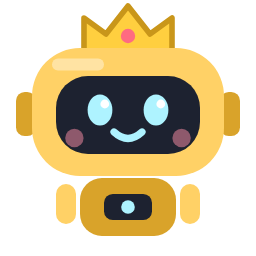

Agent Monitor 설정
시작과 창
로그인할 때 자동 시작
PC에 로그인하면 트레이에서 조용히 시작합니다
창을 닫으면 트레이로
끄면 창을 닫을 때 앱이 종료되고, 모니터 에이전트도 멈춥니다
창 불러오기 단축키
어디서든 눌러 창을 띄우고, 한 번 더 누르면 숨깁니다
데이터 폴더 — config.json, 작업판(boards/), 에이전트 목록
…
열기
바꾸기…
Claude Code hook — 승인·질문 답하기, 모드 표시, 메시지 보내기
…
설치/갱신
업데이트 — GitHub Releases
…
켤 때와 6시간마다 확인하고, 받아 두었다가 다시 시작할 때 설치합니다
지금 확인
설치하고 다시 시작
정보
버전
프로그램 정보
브라우저에서 열기